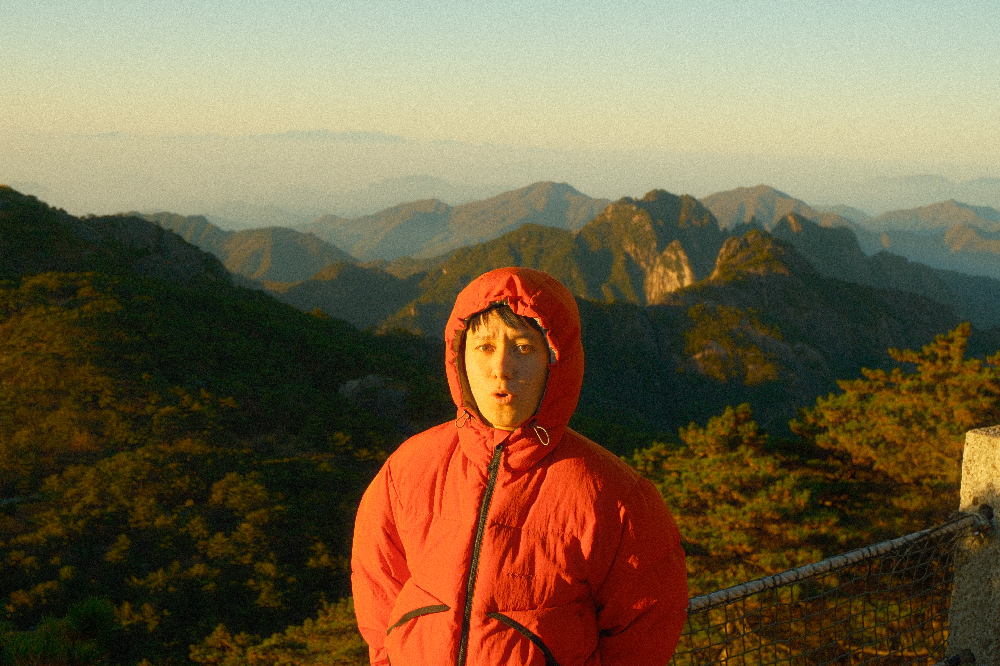
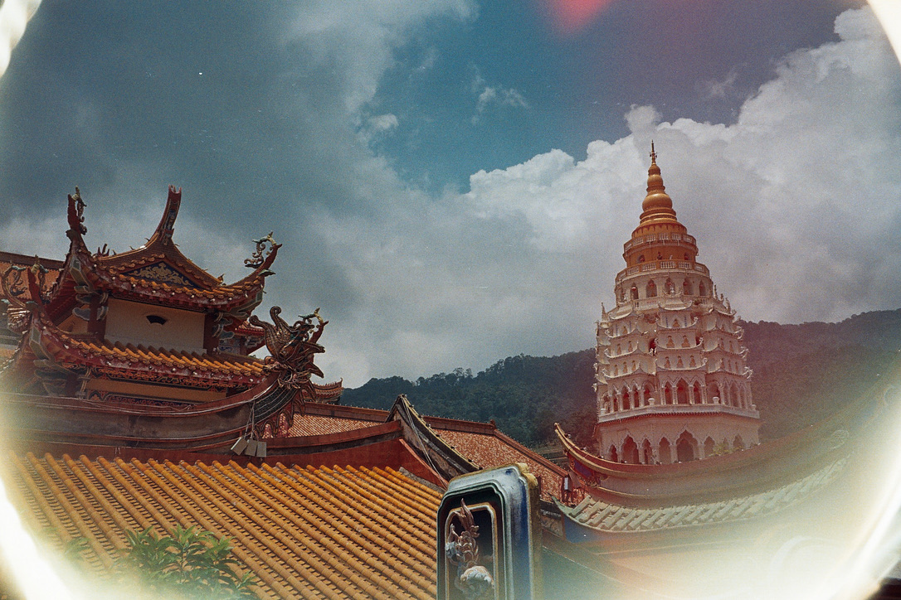
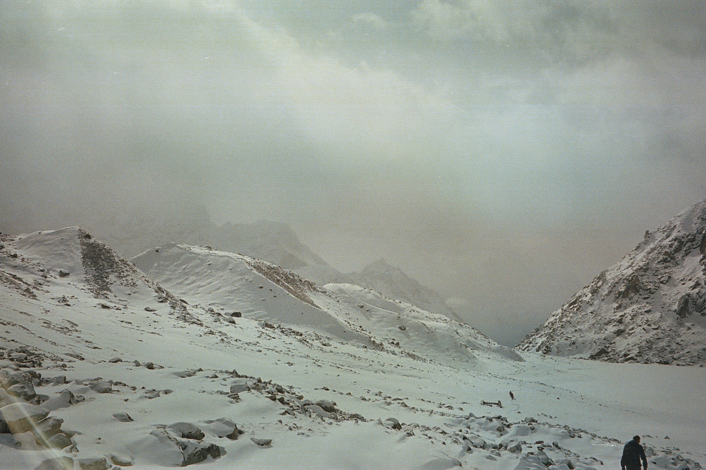
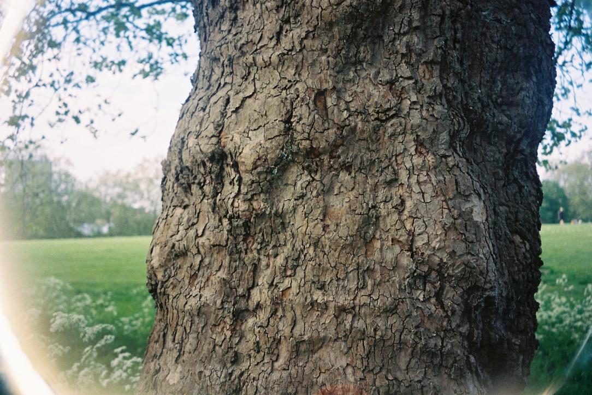
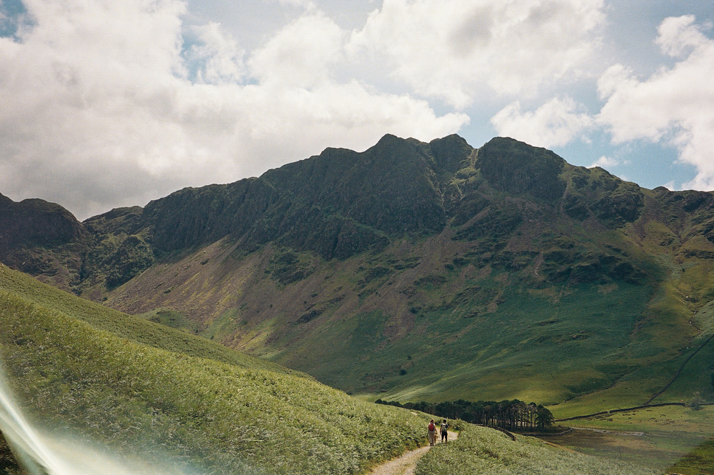
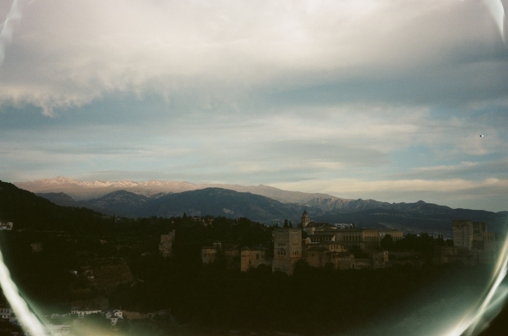
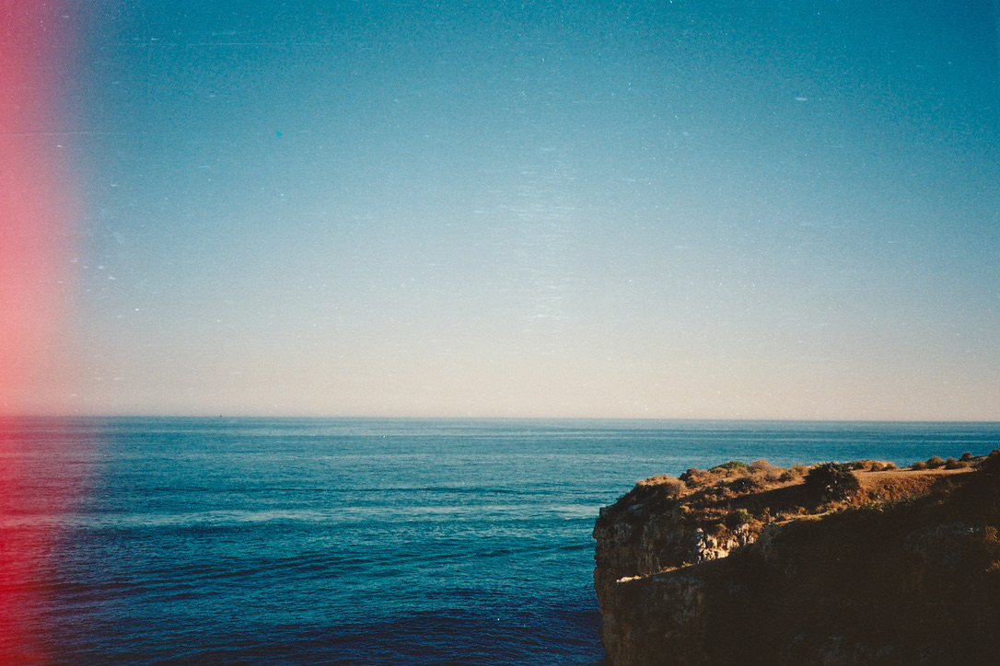

About John Ooi
An unfolding relationship with life.
I grew up in Liverpool, in a Roman Catholic family, and went to a Jewish primary school. My father is Malay Chinese and my mother is English. I'm trained as a meditation teacher and will soon live in Portugal.
a little more of the story

I went to medical school at UCL in London. Whilst there, I turned to meditation for help with anxiety and panic, and learnt that I was giving my thoughts too much power.
During a break from medical school, I volunteered at a school in Nepal. I asked a child reading from a textbook to use their inside voice, then became curious about where it was for them. It wasn’t in their head. It was in their chest, where their heart was.
I have learnt that there are many ways to experience experience.
When COVID began, I was evacuated from the Himalayan mountains. Back in the UK, I spent time isolating alone in the Scottish Highlands and started guiding meditations for friends. I didn’t know whether I wanted to become a meditation teacher, but I thought I’d better train, so I signed up for the MMTCP with Jack Kornfield and Tara Brach.
Soon after, I returned to London for university and started working on intensive care units. I remained at medical school for two more years. I have a great appreciation for medicine, and love and respect for my friends who went on to become doctors. But I learnt that it wasn’t what I wanted, so I left.
By then, I had completed the MMTCP. It opened my heart and gave me confidence. Eighteen months later, I trained again with David Nichtern at Dharma Moon, gaining a greater appreciation for precision and technique.
Now, I listen to my heart and appreciate that simple instructions can bring great freedom.





